不用想像，直接點開來用。以下皆為實際上線版本的展示版。
（客人資料與公司識別已替換為示範內容）
原本要開 Word 逐欄修改日期、姓名、序號、票數，常漏改票數、日期或另存 PDF 時誤存成 docx。
現在填一次表單即時預覽 A4 憑證，一鍵存成固定命名的 PDF，檔名同時是給 Outlook 巨集讀取的資料格式，存好切到 Outlook 按一下就自動生成客人通知信。
車行每天在 LINE 群傳來一整串格式混亂的派車訊息，但車輛一多就容易有疏漏。
這支 Google Apps Script 用正則解析訊息、把房號正規化後與班表雙向比對，自動填入車牌與加價註記，比對失敗的會列出清單提醒人工檢查。
此頁為互動模擬版：左側是模擬的 LINE 群組，一鍵複製訊息貼進外掛，體驗從「逐筆手 KEY」到「整串帶入」的差別。示範訊息裡有一筆班表故意還沒 KEY 的派車，看它怎麼被抓出來。
把住房率、續住、加床、合約統計、特殊房況整合成一個頁面，同時設計可以依照班表和特定條件，篩選出當天午晚餐用餐員工，自動計算並輸出制式交班文字一鍵複製。已部署上 GCP 並限制公司 IP 存取，讓公司兩台電腦共同讀寫儲存的房況資料，長期固定的房況不必每天重打。
依定型化契約的取消級距，輸入入住日、取消日與房價，自動算出扣款比例、沒收金額，並分別列出「匯全額」與「只匯訂金」兩種退款情境。
忙碌勞累人之常情，即使再資深也容易出錯，但錯一次就是一次客訴。
這些是實際跑在雲端與桌面環境裡的自動化。
此為我個人某段時期閒暇時間的小樂趣，以 Python 打造兩種 bot：
「小密蘇」，我的個人頻道小秘書。負責社群自動化，使用者按下按鈕即自動開啟一對一私人串、同步到管理頻道通知我有人開窗，審核通過後自動變更身分組，也能依照回覆發放指定連結，把原本要人工盯著的入群審核流程變成半自動。
AI RP bot，串接 API 並套用角色設定，實現簡易、有來有回的 AI 角色扮演對話。 回覆不再只是制式回覆，而是會透過使用者的訊息進行相應回覆。 開發流程為 Replit 搭配 GitHub 版控，push 至 GCP 自架雲端伺服器（SSH 管理），以 pm2 常駐運行、自動重啟，24 小時不中斷。
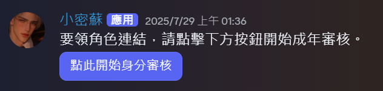
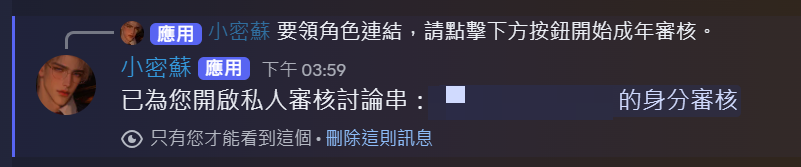
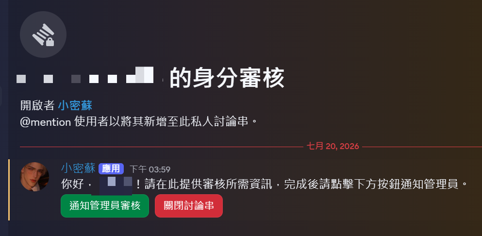
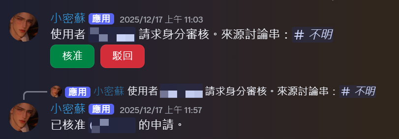
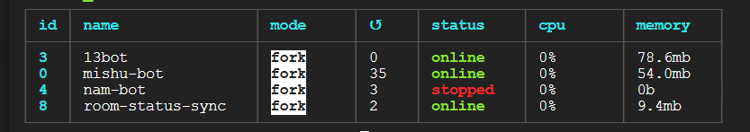
兩條 workflow 組成的自學系統： 排程流程每天早上 7 點觸發 AI 生成多益考題、透過 LINE 推送給我，同時把題目與答案寫進 Google Sheets 留存；核對流程接收我回傳的作答（如 ABCBC），從試算表撈出正確答案比對，回覆當日成績與逐題解析。目前為個人使用版本，正在把 Switch 節點擴充為多人可用。
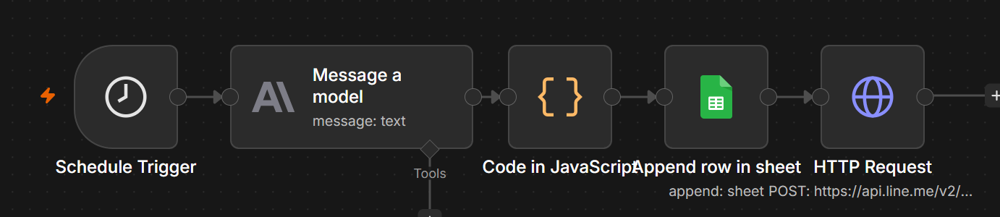
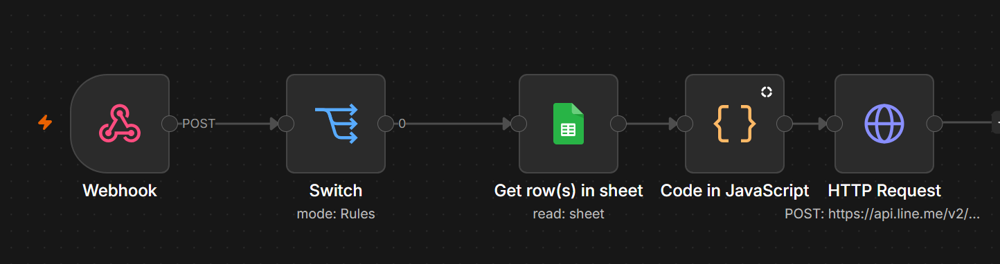
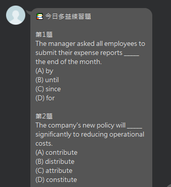
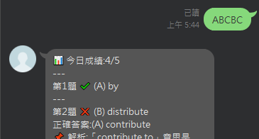
我正在 freeCodeCamp 自學 Python，但官方中文翻譯有時候我想睡的時候看不懂，於是做了一個瀏覽器外掛：串接 Claude API，用系統提示詞規範翻譯規則，程式碼與變數名一律保留、業界慣用英文術語（array、closure、props）不硬翻、語氣要像台灣工程師寫的技術文件。
工程上處理了三件事： 行內程式碼先遮蔽成 token、翻完再還原，避免被翻譯破壞； 段落分批送出控制單次請求量； 以內容雜湊做快取，重讀同一篇文章不重複燒 API 費用。 ➜ 除了 Chrome 版，也移植成 iOS Safari 的 Userscript 版，手機上也能一鍵翻譯。
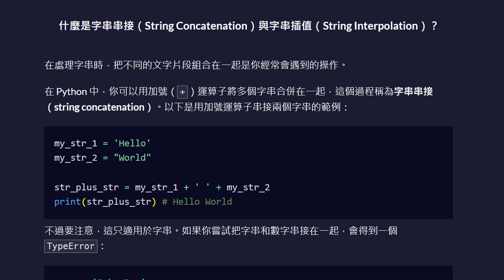
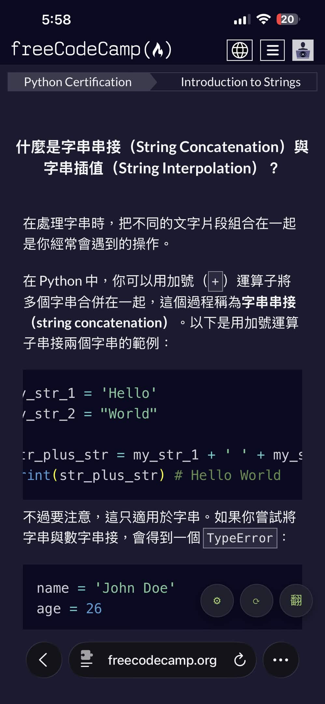
承接套票憑證產生器輸出的固定命名 PDF： 巨集讀取檔名自動辨識客人姓名、訂單序號與入住日期，一鍵生成制式通知郵件並自動夾帶對應 PDF，櫃檯人員只需要貼上客人信箱按下傳送。整條「開憑證 ➜ 寄通知」流程從多個手動步驟收斂成兩次點擊。
以下為憑證產生器搭配outlook巨集使用的DEMO影片： 影片參照我個人習慣，使用剪貼簿一次複製資料貼上流程，即便使用不方便的筆電觸控板並放慢演示，依舊可以實現快速操作。
我不是本科出身的工程師——我是那個在櫃檯遇到重複工作、會動手把它自動化的人。學習系統邏輯、拆開流程，搭配 AI 把想法真的做到上線。
我認為我辦得到，那我就願意嘗試。我的自動化不是從課本學來的，是從現場的「好麻煩」一個一個長出來的。
醫院實習時發現自己有無法克服的嚴重暈血，放棄了護理師這條路，但留下了在高壓現場保持冷靜、照 SOP 處理緊急狀況的底子。
每月平均接待 280 組客人，處理過深夜火災現場應變與各式客訴。這段時間讓我把飯店前台的每一條流程都摸得滾瓜爛熟。當時就多次主動提案把手寫交接改為電子化，雖然沒被採納，但這顆種子留到了現在。
遠端工作的經驗讓我學會如何安排與規劃個人的工作時間，並協助主管進行追蹤名單管理，以Google Sheet進行電訪客戶的追蹤、回訪紀錄、意願等，將流程優化。
在進出口部門處理大量文件歸檔時，認真思考「怎麼讓重複的事變快」。
本頁絕大多數工具的誕生地。 每天忙完手上的工作後，回想哪些地方最麻煩，覺得自己可以將這段流程進行優化，然後打開 AI 開始動手把它們一個個做成工具上線，憑證產生器、交班統計、車號解析都是這樣誕生的，當然還有一些無法展示的Google Sheet優化。
目前因個人規劃暫停，之後會挑不影響工作的時段繼續進修；現在的進修主力是在 freeCodeCamp 以及 Youtube 自學 Python，未來也打算繼續學習其他程式語言及 AI 工具。
英文中等（大夜班常態接待外國旅客，TOEIC 持續進步，並搭配自己做的 n8n 考題 bot 加強中）、日文略懂，後續將會持續開發 n8n 考題 bot，目標是增加日文與其他我有興趣的語言檢定考題功能。 完整學經歷與聯絡資訊請見隨信附上的履歷。